Le navigateur internet est l’outil primordial sur un appareil mobile. Il est le moteur pour naviguer sur internet. Plus uniquement pour les sites web mais aussi maintenant pour les nouveaux types d’applications basées sur les technologies web (progressive web app, jeux…).
Pour cette nouvelle édition de notre classement, réalisé en 2018 et en 2020, nous avons choisi de comparer 16 applications mobiles : Brave, DuckDuckGo, Chrome, Ecosia, Edge, Firefox, Firefox Focus, Firefox Nightly (anciennement Preview), Kiwi, Mint, Opera, Opera Mini, Qwant, Samsung, Vivaldi et Yandex.
L’objectif de ces mesures est de voir comment les solutions se situent en termes d’impact environnemental (émission Carbone) les unes par rapport aux autres sur des scénarios utilisateurs courants mais aussi de donner des repères sur nos usages des navigateurs.
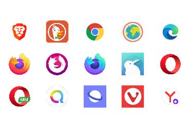
Pour chacune de ces applications mesurées sur un smartphone Galaxy S7 (Android 8), les scénarios intégrant le lancement du navigateur, la navigation sur 7 sites web différents, les périodes d’inactivité etc. ont été réalisés au travers de notre Greenspector Test Runner, permettant la réalisation de tests automatisés.
En savoir plus sur la méthodologie
Consommation d’énergie tous parcours confondus (en mAh)
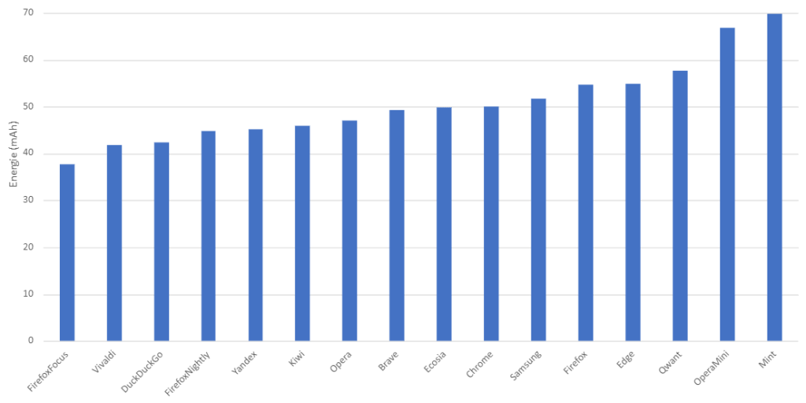
La moyenne de consommation d’énergie est de 49 mAh (pour rappel, la moyenne du classement 2020 était de 47mAh, soit +4,2% en 2021).
Voici l’évolution par rapport à l’année dernière.
| Classement 2021 | Classement 2020 | Évolution | |
|---|---|---|---|
| Firefox Focus | 1 | 10 | 9 |
| Vivaldi | 2 | 4 | 2 |
| DuckDuckGo | 3 | 5 | 2 |
| Firefox Nighly | 4 | 10 | 6 |
| Yandex | 5 | 3 | -2 |
| Kiwi | 6 | 8 | 2 |
| Opéra | 7 | 2 | -5 |
| Brave | 8 | 7 | -1 |
| Ecosia | 9 | 1 | -8 |
| Chrome | 10 | 6 | -4 |
| Samsung | 11 | 9 | -2 |
| Firefox | 12 | 13 | 1 |
| Edge | 13 | 11 | -2 |
| Qwant | 14 | 13 | -1 |
| Opera Mini | 15 | 14 | -1 |
| Mint | 16 | 12 | -4 |
Firefox Focus et la meilleure solution en termes de consommation énergétique de notre comparatif. La version évaluée en 2020 était une des premières versions et il semble que les équipes Firefox ont travaillé sur l’optimisation de la consommation d’énergie de leur navigateur depuis. Ecosia perd sa place de leader sur cet indicateur et se retrouve en milieu de classement. Du côté des navigateurs les plus énergivores on retrouve Mint et Opera Mini. À noter que les navigateurs les plus répandus : Edge, Firefox, Chrome et Samsung, sont assez mal classés.
Cette consommation totale d’énergie peut être évaluée et analysée en 2 domaines : la consommation d’énergie de la navigation pure et la consommation d’énergie liée aux fonctionnalités du navigateur.
Consommation d’énergie de la navigation (en mAh)
La navigation est la consommation uniquement associée à la visualisation de la page (pas de prise en compte du lancement du navigateur, des fonctionnalités…).
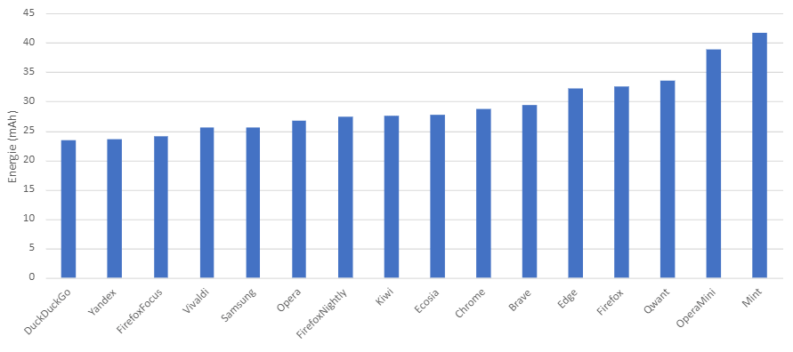
La plupart des navigateurs ont une consommation d’énergie sur la navigation “pure” qui est assez proche. Ceci s’explique principalement sur l’usage des moteurs de visualisation. La plupart des navigateurs utilisent le moteur de visualisation Chromium.
Par rapport au classement 2020, il semble que le moteur Firefox se soit amélioré. Qwant, utilisant ce moteur aussi.
Consommation d’énergie des fonctionnalités (en mAh)
Les fonctionnalités intègrent les états du navigateur comme les périodes d’inactivités (idle), le lancement du navigateur, l’écriture des URLs dans la barre de navigation.
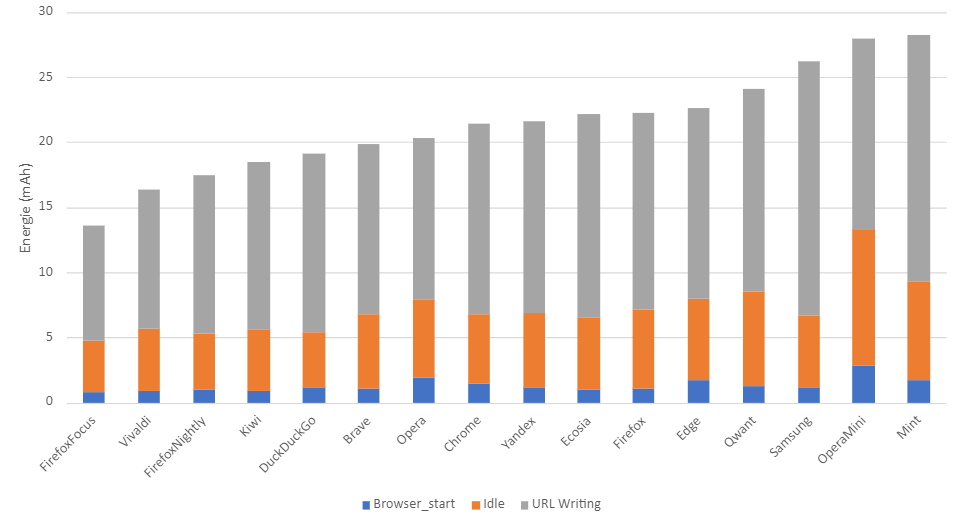
En gardant le même classement que pour l’énergie totale, on voit que les fonctionnalités hors navigation (écriture d’URL, inactivité du navigateur…) ont un impact non négligeable sur la consommation totale.
Autonomie (heures)
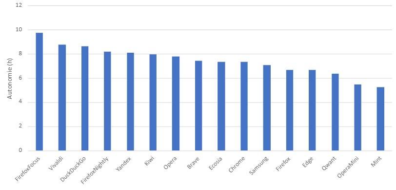
L’autonomie est le nombre d’heures pendant lesquelles l’utilisateur peut surfer avant que la batterie ne soit complètement déchargée. Le classement ne change pas par rapport à celui de l’énergie, l’autonomie étant directement liée à l’énergie.
On observe que l’autonomie peut doubler de 5h à 10h entre le navigateur le plus consommateur (Mint) et le moins consommateur (Firefox Focus).
Données (Volume de données échangées) (Mo)
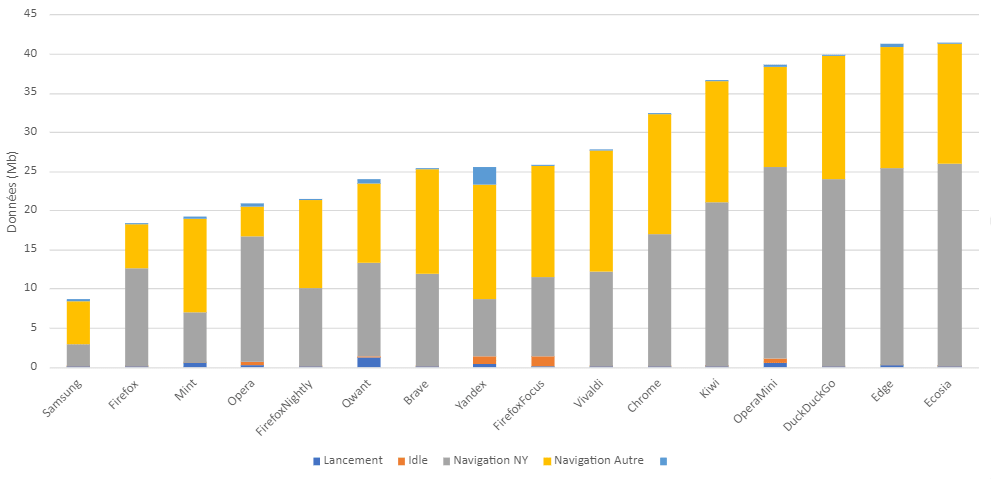
Certaines applications ne gèrent pas du tout le cache pour des raisons de protection et de confidentialité des données, utilisent des proxy qui optimisent les données, ont une différence d’implémentation de la gestion du cache. De plus, si un navigateur est performant, la contrepartie est que beaucoup plus de données sont potentiellement chargées en arrière-plan. Dans notre méthodologie, on le constate pour le site New York Times plus volumineux en termes de données.
Voici un exemple des itérations de mesure sur le site Amazon (Amazon.com) qui montre la différence de traitement des données entre différents navigateurs.
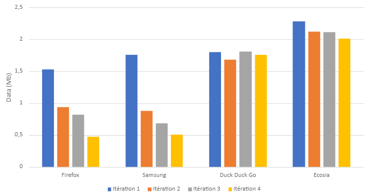
Mémoire consommée (RAM) par le processus navigateur (Mo)
La consommation de mémoire est importante à prendre en compte dans un service numérique car même la variation de la consommation de mémoire n’influe pas sur l’impact énergétique, elle reste très importante à intégrer car des effets de surconsommations sur des smartphones déjà bien encombrés en mémoire, ou plus anciens, moins puissants, cela peut créer des instabilités ou des applications qui ne peuvent pas fonctionner simultanément car en concurrence. En terme écologique, cela peut bien sûr procurer un changement de smartphone prématuré côté utilisateur pour un modèle plus puissant pour satisfaire à un bon confort d’usage.

La variation va de 400 Mo à 1,8Go (soit environ la moitié de la RAM du Samsung Galaxy S7).
Observons plus précisément le comportement de la mémoire suite à la séquence :
1. Lancement navigateur
2. Inactivité Navigateur
3. Navigation (Moyenne de la consommation mémoire)
4. Inactivité suite à la navigation
5. Système après fermeture navigateur
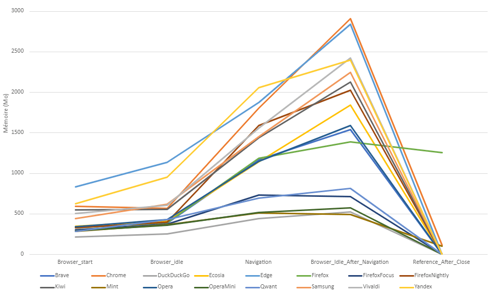
Au lancement des navigateurs, on a une médiane d’utilisation de la mémoire de 413Mo. Edge consomme beaucoup plus avec 834Mo.
Si on laisse le navigateur inactif, la consommation mémoire de la plupart des navigateurs reste assez stable. Ce qui est plutôt bon et normal. Par contre, on voit que Edge et Ecosia ont une forte augmentation de la mémoire.
Ensuite, avec la navigation, la mémoire consommée augmente de façon importante. Cela s’explique par la consommation des moteurs de navigation pour analyser et stocker les éléments. La gestion des onglets va aussi jouer. Si le navigateur déleste la mémoire pour les onglets non actifs, alors la consommation sera plus faible.
On peut noter que Firefox Focus, Mint, Duck Duck go, Opéra Mini et Qwant consomment globalement peu de mémoire.
À la fermeture du navigateur, presque tous les onglets ne sont plus en mémoire. Firefox reste cependant avec 1Go ainsi que Chrome et Mint avec 100Mo environ. Probablement un bug mais qui est gênant car des éléments occupent encore la mémoire et des traitements peuvent aussi exister : les traitements sont confirmés sur Firefox et Mint avec le taux de CPU consommé par le processus du navigateur qui reste élevé.
On peut aussi regarder l’impact mémoire de la consultation de Wikipédia (La consommation de base du navigateur est ici soustraite).
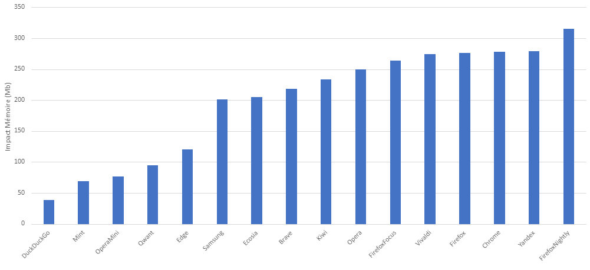
On comprend bien la différence de gestion mémoire entre navigateurs et la potentielle entropie sur des sites plus lourds.
Performance
Nous avons mesuré le temps d’écriture de l’URL dans la barre d’adresse.
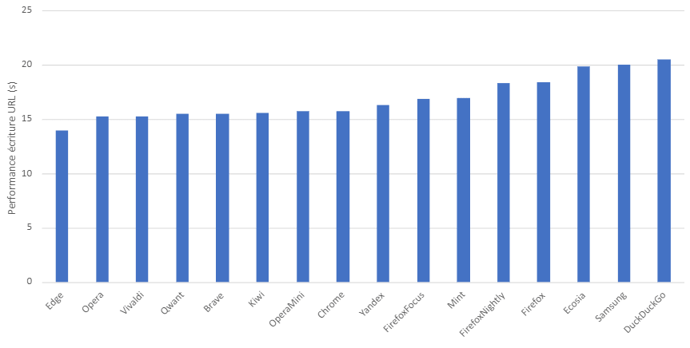
Cette différence de performance s’explique par plusieurs facteurs : échanges réseau lors de la saisie (auto-complétions), traitement lors de la saisie, recherche en base des adresses connues… Au final, pour l’utilisateur le temps pour avoir accès au site va être plus ou moins long. Exemple sur l’entrée de l’url Wikipédia sur Duck Duck Go: beaucoup d’échanges réseau et de traitements CPU (pic à 22% de CPU).
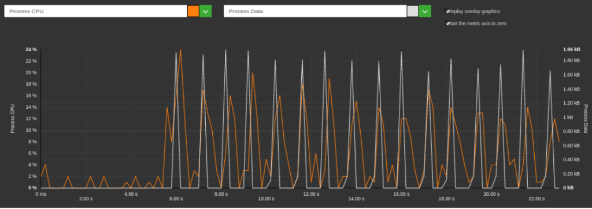
Contrairement à Edge plus rapide qui a des traitements plus faible en terme de CPU.
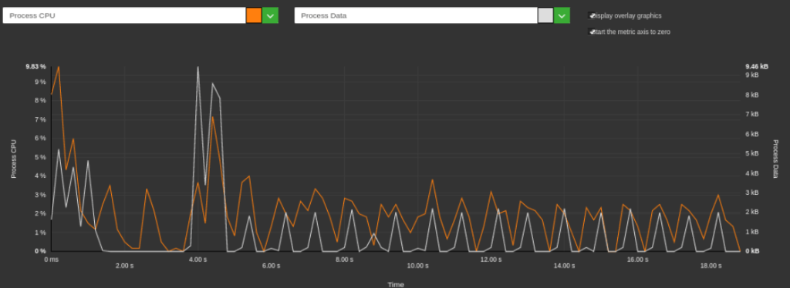
Au passage, on pourrait avoir une optimisation de tous les navigateurs en limitant ses traitements (par exemple en regroupant et espaçant les traitements).
Impact environnemental
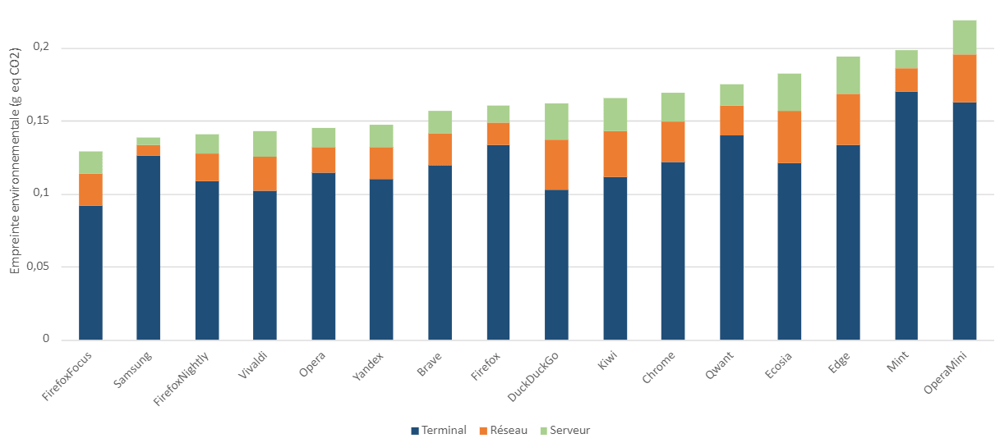
L’impact environnemental est calculé en fonction des facteurs d’émission Greenspector prenant en compte l’énergie consommée et l’usure de la batterie (impact sur la fabrication). L’impact du réseau et du data center est pris en compte avec l’intensité internet.
Cet impact est ramené à la consultation d’une page.
Firefox Focus par sa faible consommation est premier. Samsung qui a une consommation d’énergie dans la moyenne est à la deuxième place grâce à bonne gestion des données.
Les navigateurs les plus impactants (Esosia, Edge, Mint et Opera Mini) ont une consommation d’énergie élevée et une mauvaise gestion des données.
Méthodologie GreenspectorNavigateurs évalués
Versions mesurées : Brave (1.18.75), Chrome (87.0.4280.101), DuckDuckGo (5.72.1), Ecosia (4.1.3), Edge (45.12.4.5121), Firefox (84.1.2), Firefox Focus (8.11.2), Firefox Nightly 201228), Kiwi (Git201216Gen426127039), Opera (61.2.3076.56749), Opera Mini (52.2.2254.54723), Qwant (3.5.0), Vivaldi (3.5.2115.80), Yandex (20.11.3.88), Mint (3.7.2), Samsung (13.0.2.9).
Scénario
Pour chacune de ses applications, mesurées sur un smartphone S7 (Android 8), les scénarios utilisateurs ont été réalisés au travers de notre Greenspector Test Runner, permettant la réalisation de tests automatisés.
Une fois l’application téléchargée et installée, nous exécutons nos mesures sur les paramètres de base et d’origine de l’application. Aucune modification n’est réalisée (même si certaines options permettent de réduire la consommation d’énergie ou ressources : mode économie de données, thème sombre etc.
Cependant nous vous encourageons à vérifier les paramètres de votre application favorite afin d’en optimiser l’impact. Voici le scénario évalué :
· Évaluation des fonctionnalités
o Lancement du navigateur
o Ajout d’un onglet
o Écriture d’une URL dans la barre de recherche
o Suppression des onglets et nettoyage du cache
· Navigation
o Lancement de 7 sites et attente pendant 30 secondes pour être représentatif d’un parcours utilisateur
· Benchmark navigateur
o Le benchmark Mozilla Kraken permet de tester la performance JavaScript
· Évaluation des périodes d’inactivité du navigateur
o Au lancement (cela permet d’évaluer la page d’accueil du navigateur)
o Après navigation
o Après fermeture du navigateur (pour identifier des problèmes de fermeture)
Pour chaque itération, on réalise les tests suivants :
· Suppression du cache et des onglets (sans mesure)
· Première mesure
· Deuxième mesure pour mesurer le comportement avec cache
· Suppression du cache et des onglets (avec mesure)
· Fermeture système du navigateur (et pas uniquement une fermeture par l’utilisateur pour s’assurer une réelle fermeture du navigateur)
La moyenne de mesure prend donc en compte une navigation avec et sans cache.
Les métriques principales analysées sont les suivantes : performance d’affichage, consommation d’énergie, échange de données. D’autres métriques telles la consommation CPU, la consommation mémoire, des données systèmes… sont mesurées mais ne seront pas affichées dans ce rapport. Contactez Greenspector pour en savoir plus.
Afin d’améliorer la stabilité des mesures, le protocole est totalement automatisé. Nous utilisons un langage abstrait de description de test Greenspector qui nous permet une automatisation poussée de ce protocole. Les configurations des navigateurs sont celles par défaut. Nous n’avons changé aucun paramètre du navigateur ou de son moteur de recherche.
Chaque mesure est la moyenne de 5 mesures homogènes (avec un écart-type faible).=
Évaluation de l’impact
Pour évaluer les impacts des infrastructures (datacenter, réseau) dans les calculs de projection carbone, nous nous sommes appuyés sur notre base de facteur d’émission (issus de notre R&D, comme par exemple l‘Étude d’impact de la lecture d’une vidéo Canal+ – Greenspector) avec en entrée les données réelles mesurées du volume de données échangées. Comme c’est une approche très macroscopique, elle est soumise à une incertitude et pourrait être affinée pour s’adapter à un contexte, à un outil donné. Pour la projection Carbone, nous avons pris l’hypothèse d’une projection 50% via un réseau Wi-Fi et 50% via un réseau mobile.
Pour évaluer les impacts du mobile dans les calculs de projections carbone, nous mesurons sur appareil réel, la consommation d’énergie du scénario utilisateur et afin d’intégrer la quote-part d’impact matériel, nous nous appuyons sur le taux d’usure théorique généré par le scénario utilisateur sur la batterie, première pièce d’usure d’un smartphone. 500 cycles de charges et de décharges complètes occasionnent donc dans notre modèle un changement de smartphone. Cette méthodologie et mode de calcul ont été validés par le cabinet de conseil spécialiste de l’éco-conception Evea.
Dans une démarche de progrès continu, nous sommes vigilants à améliorer sans cesse la cohérence de nos mesures ainsi que notre méthodologie de projections des données en impact CO2. De ce fait, il est difficilement possible de comparer une étude publiée un an plus tôt avec une étude récente.